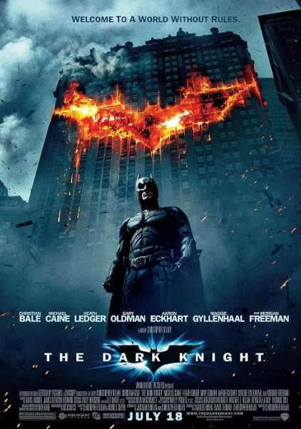
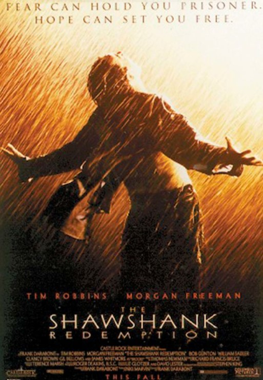
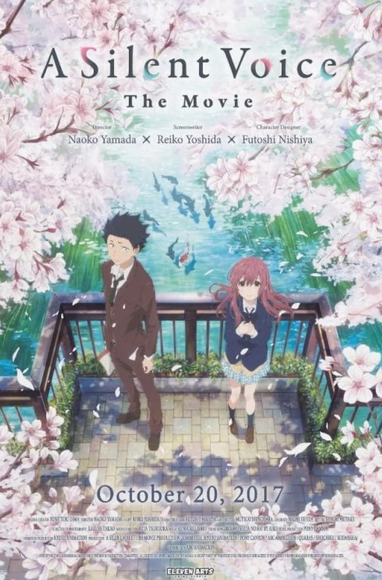
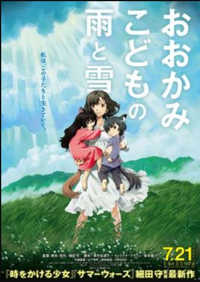

 "The Dark Knight" is a gripping and thought-provoking exploration of heroism, morality, and the fine line between good and evil. The film transcends the typical superhero genre by delving into the psychological complexity of its characters, especially the Joker, played by Heath Ledger in an Oscar-winning performance. It’s not just a battle between good and evil but a deeper moral dilemma about the consequences of justice, the cost of heroism, and the chaos that can emerge from an unstable society.
The film’s brilliance lies not just in its action sequences but in its philosophical undertones. Batman, as a symbol of justice, is constantly tested by the Joker's anarchistic worldview. The dynamic between the two characters explores the corrupting influence of power, the struggle to uphold one's principles, and the sacrifice that comes with being a hero. *The Dark Knight* challenges its audience to question what it means to be a hero in a world where the line between good and evil is not always clear.
Christopher Nolan’s direction, combined with Hans Zimmer’s haunting score, creates an atmosphere of tension and urgency that keeps viewers on the edge of their seats. The film is a masterclass in storytelling, character development, and moral complexity, making it a standout in the superhero genre. *The Dark Knight* is not just a film; it’s a cultural phenomenon that has left a lasting impact on cinema and continues to resonate with audiences around the world.
 *The Shawshank Redemption* is a timeless story about hope, resilience, and the unbreakable human spirit. Set in the bleak confines of Shawshank prison, the film focuses on the friendship between Andy Dufresne and Ellis "Red" Redding, two men who find a sense of purpose and dignity despite being incarcerated. The movie captures the emotional journey of redemption, as Andy uses his intelligence and skills to transform not only his own life but the lives of those around him.
The film’s central theme is hope, and its message is that even in the darkest of places, one can find freedom within their own heart and mind. Andy’s unyielding belief in a better future and his ability to remain humane in the face of injustice serve as powerful examples of how the human spirit can prevail against adversity. *The Shawshank Redemption* is a movie that teaches the value of patience, perseverance, and the importance of maintaining one's integrity even when faced with overwhelming odds.
The film’s cinematography and storytelling are masterfully crafted, with poignant moments that resonate deeply with the audience. The performances by Tim Robbins and Morgan Freeman are exceptional, bringing depth and authenticity to their characters. *The Shawshank Redemption* is not just a film about prison life; it’s a profound exploration of friendship, hope, and the enduring power of the human spirit.
 "A Silent Voice" is a heart-wrenching exploration of guilt, redemption, and the power of communication. The film follows Shoya Ishida, a boy who bullied Shoko Nishimiya, a deaf girl, during his childhood. The movie delves into the emotional consequences of Shoya’s actions and his quest for redemption after he reconnects with Shoko years later. It’s a beautiful exploration of how our past mistakes shape who we are, and the importance of making amends for the hurt we’ve caused others.
One of the film’s greatest strengths is its honest portrayal of mental health struggles, especially in the context of bullying, isolation, and self-loathing. It portrays the journey of healing not just for Shoya but also for Shoko, who has suffered in silence. The animation is breathtaking, with moments of subtlety and depth, capturing the internal turmoil of the characters. *A Silent Voice* reminds us of the importance of empathy, forgiveness, and the need to reach out to those we’ve wronged, no matter how much time has passed.
The film’s themes of acceptance and understanding resonate deeply, as Shoya learns to confront his past and the impact of his actions on Shoko's life. The emotional depth of the story, combined with its stunning visuals, makes *A Silent Voice* a must-watch for anyone who appreciates heartfelt storytelling and the complexities of human relationships.
 "Wolf Children" is a beautifully crafted and deeply emotional story about motherhood, identity, and the complexities of raising children who are different. Directed by Mamoru Hosoda, this anime film follows Hana, a woman who raises her two children, who are part wolf, after the death of their father. The film explores the challenges of being different in a world that doesn't understand you, while also focusing on the bond between mother and child.
The animation in "Wolf Children" is stunning, with breathtaking depictions of nature and the world around the characters. The film has a quiet, reflective pace that allows the viewer to truly connect with the characters' struggles and triumphs. It's a story about love, sacrifice, and the beauty of growing up, and it serves as a poignant reminder of the lengths a parent will go to for their children. *Wolf Children* is a film that tugs at the heartstrings, capturing the universal experience of nurturing and letting go.
The film's themes of acceptance and understanding resonate deeply, as Hana navigates the challenges of raising her children in a world that may not accept them. The emotional depth of the story, combined with its stunning visuals, makes *Wolf Children* a must-watch for anyone who appreciates heartfelt storytelling and the complexities of family life.
{kind=link}
{kind=link}
{kind=link}
{kind=link}